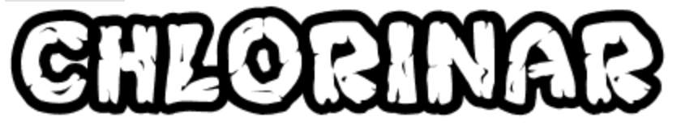
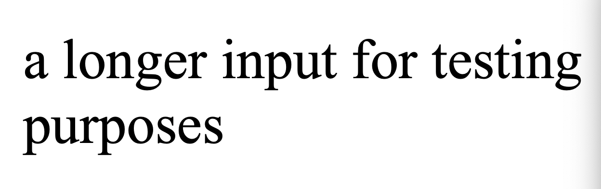
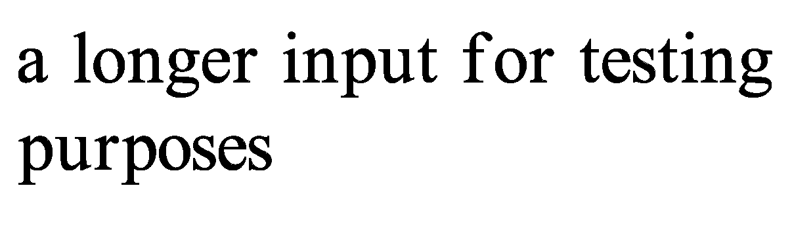

Our approach was to first split the work between rasterizing Bezier curves and parsing .ttf files. We had the rasterizer draw Bezier curves by using the method of incrementing over t to draw outlines, while also working on the parser that would take a .ttf as input, find the Bezier curves for each letter, and pass them to a form usable by the rasterizer.
After this, we were able to draw the text outlines, but filling between the Bezier curves used a different algorithm. For each row of pixels in the image buffer, we would compute intersections between that row and every curve in the text, and then fill inbetween the intersection points. Computing the location of the intersections requires solving the associated polynomial using the Bezier control points and the y-coordinate of the row. This gives the t value which can be used to find the location in x and y.
The fonts used (in order) are Rubik Mono One, Chlorinar, Cherry Lime, Arial, and Times New Roman.
| Example of font | Our font rasterization |
|---|---|
|  | |
|  |  |
Over the past two weeks, we had planned to implement rasterizing bezier curves, parsing a .ttf file to render a character outline, and rendering a flood filled character. We accomplished most of these things and a bit more, seeing as we also implemented font size and text with multiple characters, which were not in the schedule.
However, implementing flood-filled characters proved to be a bit more of a challenge than expected. While we had implemented flood-fill to the right of a quadratic Bezier curve, the font file can use line segments, quadratic Bezier curves, and cubic Bezier curves. New edge cases are introduced and more conditions need to be handled with lines and cubic Bezier curves, and therefore we needed to modify our algorithm and add a library for solving cubic polynomials. Also, we haven't implemented anti-aliasing via supersampling.
Because of the remaining bugs in flood-filling, we shall add finishing up flood-filled characters to the week of 4/26 in our schedule, but otherwise we are keeping our schedule as is.